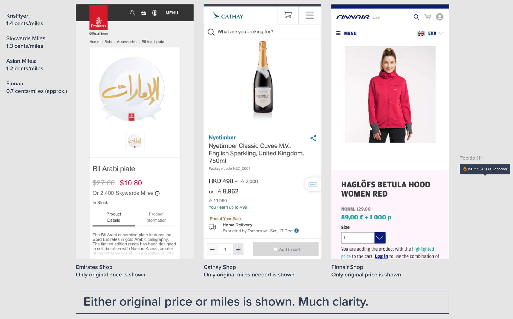
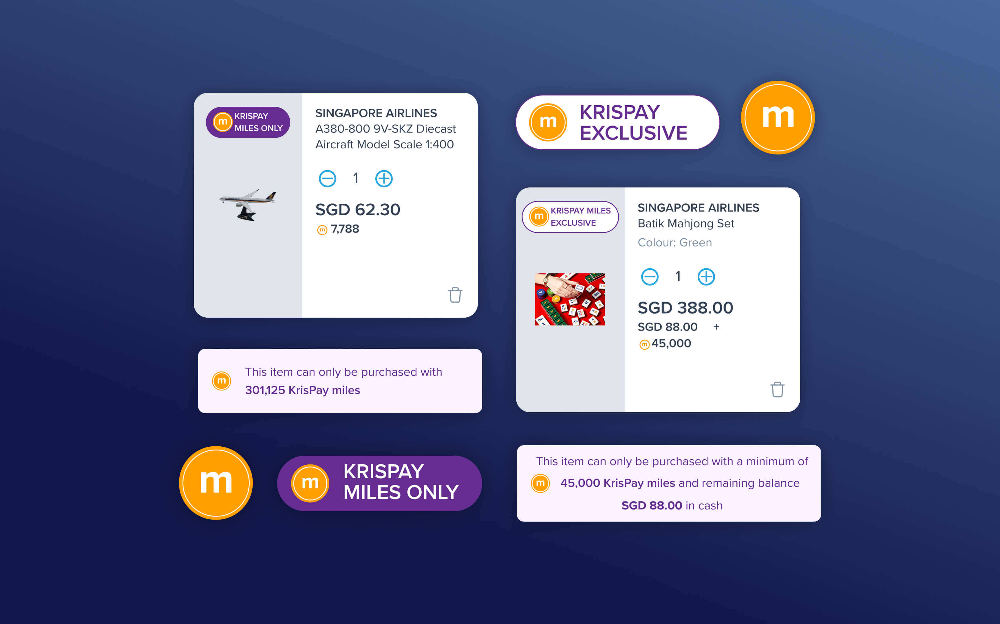
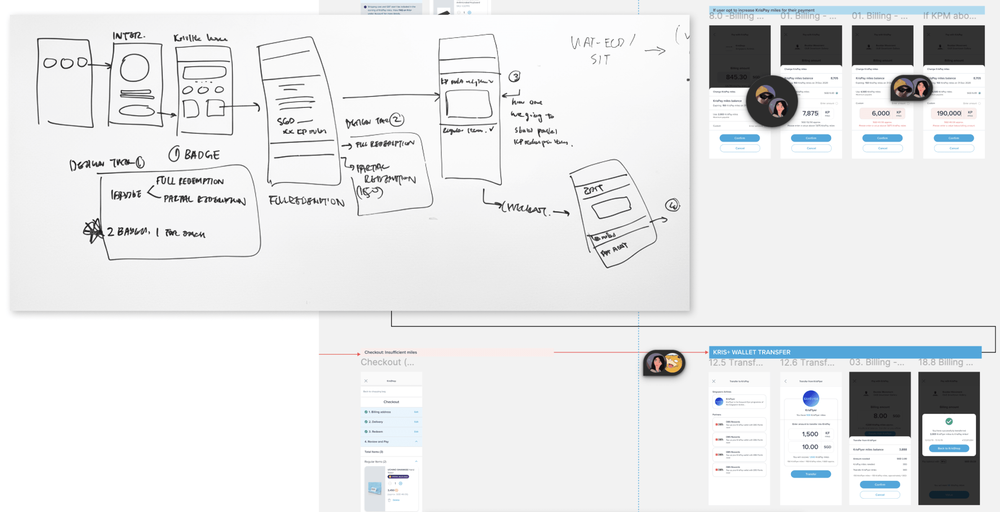
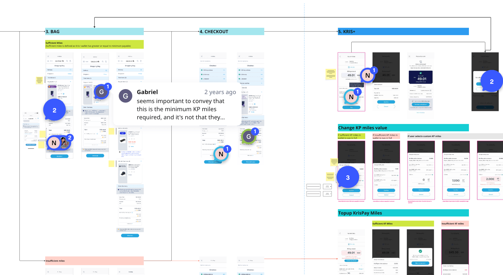

Redeeming Krisflyer Miles for KrisShop on Kris+
Designed the full-miles redemption promotion for KrisShop on Kris+ mobile app. This is a monthly promotion which members enjoy 30% savings when they redeem with miles instead of paying with cash for participating products.
.jpg)
Background
Frequent flyer programmes are central to airline loyalty strategies, boosting revenue by encouraging more flights and purchases through miles redemption. The KrisFlyer programme is the frequent flyer programme of Singapore Airlines. Members earn miles when they fly and they can redeem those miles for flights, upgrades, and other rewards. KrisShop is the online shopping platform of Singapore Airlines, where members can use their KrisFlyer miles to purchase a wide range of products, including electronics, fashion, beauty, and travel accessories.
The goal of this project is to design a seamless and user-friendly experience for members who want to redeem their KrisFlyer miles on KrisShop through the Kris+ app.
Design Process
Flow Analysis
The miles redemption flow is a relative novel way of shopping online. It is a multi-step process that involves several screens and interactions. Hence, I mapped out the entire user journey to identify potential pain points and areas for improvement.

Benchmarking
I conducted competitor benchmarking to explore how other companies display their miles redemption flow. I analysed the strengths and weaknesses of each competitor's approach and identified best practices that could be applied to our design.

Synthesising Findings
Based on the user journey mapping and benchmarking, I identified the following design requirements for the miles redemption flow:
In addition, there are also business requirements that need to be considered:

Low-fidelity designs
I created low-fidelity wireframes to explore different design solutions and to communicate my ideas with the engineering team. This helped to ensure that the designs were technically feasible and aligned with the overall product vision.

Hi-fidelity designs
After receiving feedback from the engineering team, I created high-fidelity designs that incorporated the feedback and addressed any technical constraints. I also consulted with a UX writer to ensure that the copy was clear and concise before handing over the designs to the engineering team for implementation.

Final Design
The final design of the miles redemption flow is a seamless and user-friendly experience that onboards customers to redeem their Krispay miles on KrisShop through the Kris+ app. The design incorporates the key design requirements and business requirements identified earlier in the process.